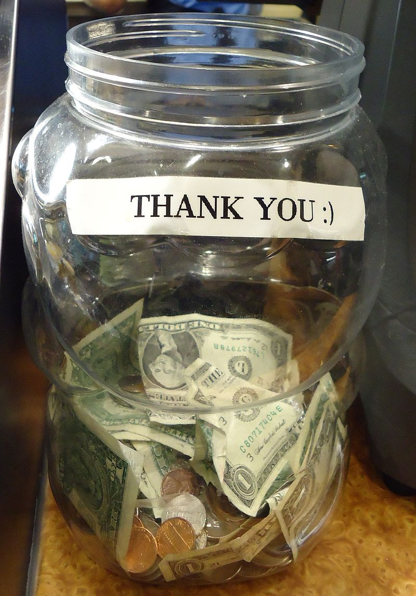

Airija
Gyva ir žavinga vieta, kur tradicijos ir bendruomeniškumas yra svarbūs kasdienybėje.

Gyva ir žavinga vieta, kur tradicijos ir bendruomeniškumas yra svarbūs kasdienybėje.
Airiai turi unikalų humoro jausmą – šiek tiek sarkastišką, bet niekada piktybišką. Nesvarbu, ar tai linksmas pokštas, ironiškas pastebėjimas, ar tiesiog smagus pokalbis prie pintos alaus – juokas čia yra kasdienybės dalis. Jei gali prisidėti prie pokštų ir nebijai, kad tave paerzins su šypsena – tu jau pusiau airis!

Airijoje normalu pasisveikinti su žmonėmis tiesiog einant gatve, net jei jų visiškai nepažįsti. Gali būti trumpas „Hi“, „How’s it going?“ ar tiesiog linktelėjimas su šypsena. Mažesniuose miesteliuose ar kaimuose to net neišvengsi – nes jei nepasisveikinsi, žmonės gali pagalvoti, kad tau kažkas negerai!

Airijos oras toks nenuspėjamas, kad per vieną dieną gali patirti visus keturis metų laikus. Tai puiki priežastis nuolat apie tai kalbėti! Lietus, saulė, vėjas – viskas gali keistis per minutes, tad užtenka pasakyti „Typical Irish weather, isn’t it?“ – ir jau turi pokalbio partnerį.

Airiai nemėgsta girtis savo pasiekimais ar pernelyg rimtai žiūrėti į save. Net jei kas nors pasiekia didžiulių laimėjimų, dažnai išgirsi: „Ah sure, it was nothing!“ Kuklumas čia laikomas geru tonu, o per daug pasitikintys savimi žmonės dažniausiai sulaukia gero humoro dozės iš aplinkinių.

Airiai tiesiog dievina gerą istoriją ir muziką! Nesvarbu, ar tai gyva muzika bare, ar ilgas pasakojimas apie kažkieno „giminės istoriją“, pasakojimai čia – ypatingai vertinami. Jei kada nors pateksi į airišką vakarėlį, tikėtina, kad kas nors ims dainuoti liaudies dainą, o visi aplinkiniai noriai prisijungs.


Imbolc švenčiama vasario 1 d., senovinė keltų šventė, skirta pavasario pradžiai ir šventai Brigidai.

Šv. Patriko diena švenčiama kovo 17 d., pagerbiama Airijos globėją šventąjį Patriką, su parado tradicijomis ir žalios spalvos dėvėjimu.

Banko atostogos - tai šventinės dienos, paprastai švenčiamos pirmadieniais, skirtos poilsiui ir darbuotojų teisėms.

Šv. Stepono diena, švenčiama gruodžio 26 d., tradiciškai švenčiama su paradu ir labdaros renginiais.
Štai keletas dažnai naudojamų frazių Airijoje! Šios frazės padės nepasimesti pokalbių metu. Tačiau jas reikėtų naudoti atsargiai, nes, jei netyčia persistengsite, gali pasirodyti nemandagiai.
Reikšmė: nuobodus, neįdomus žmogus.
Panaudojimas: „Stop being a dryshite and join the fun!“
Tai lengvai pašaipus, bet draugiškas terminas.
Patarimas! Jei sakote tai žmogui, kurio gerai nepažįstate, jis gali įsižeisti!
Reikšmė: juokingas, linksmas.
Panaudojimas: „That lad is gas, I couldn’t stop laughing!“
Airiai mėgsta naudoti „gas“ apibūdindami žmones ar situacijas, kurios prajuokina.
Patarimas! Nors „gas“ reiškia juokingą žmogų, jis nereiškia „kvailas“ – tai labiau pagyra nei įžeidimas.
Reikšmė: „kaip tau sekasi?“, „kaip laikaisi?“
Panaudojimas: „She did the extra work, she’s a keener.“
Ši frazė dažniausiai vartojama kaimiškose Airijos vietovėse.
Patarimas! Jei sakysite tai mieste, žmonės gali nustebti, bet vis tiek supras!
Reikšmė: „kaip tau sekasi?“, „kas naujo?“
Panaudojimas: „What’s the story, mate?“
Tai labai populiarus pasisveikinimas Airijoje, kurį galite naudoti su draugais ar net su nepažįstamaisiais.
Patarimas! Tai nėra tiesioginis klausimas apie istoriją – žmonės tiesiog laukia trumpo atsakymo, kaip jums sekasi.
Reikšmė: „nejuokauk“, „baig tu“.
Panaudojimas: „I won the bet!“ – „G’way outta that!“
Tai draugiška frazė, kuri dažnai vartojama nustebus ar juokaujant.
Patarimas! Tai ne tik netikėjimo išraiška – kartais žmonės tai sako ir juokais, kai kas nors erzina.
Reikšmė: apgaudinėti, juokauti.
Panaudojimas: „Calm down, I’m only coddin’ ya!“
Tai dažnai sakoma šypsantis, kai kažkas pokštauja.
Patarimas! Jei kas nors sako „I’m only coddin’ ya“, nepriimkite to rimtai!
Reikšmė: kvailioti, kelti problemas.
Panaudojimas: „Stop acting the maggot and behave!“
Tai gali būti draugiškas priekaištas vaikams ar draugams.
Patarimas! Jei kas nors sako, kad jūs „acting the maggot“, tai reiškia, kad elgiatės nerimtai ar išdykėliškai.
Reikšmė: eiti gerti alkoholio (per vakarėlį).
Panaudojimas: „We’re heading out on the lash!“
Tai labai airiška frazė, naudojama kalbant apie stiprų vakarėlį.
Patarimas! Jei sakote tai darbo pokalbyje, galite sulaukti keistų žvilgsnių!
Reikšmė: alus, kiti alkoholiniai gėrimai.
Panaudojimas: „I’ll grab some scoops before going back.“
Tai neformalus būdas kalbėti apie gėrimus, labiau įprastas tarp jaunų žmonių.
Patarimas! Tai labai neformalus žodis, ir jei jį pasakysite su nepažįstamais žmonėmis, jie gali nesuprasti. Geriau naudoti su draugais ir žmonėmis, kurie gerai žino airių žargoną.
Reikšmė: vaikinas, draugas, draugužis.
Panaudojimas: „He’s a good fella, always helps out.“
Dažnai naudojama kalbant apie vyrus ar draugus, tačiau gali būti vartojama ir apie bet kokį žmogų.
Patarimas! Tai labai neformalus terminas, naudojamas vyresnio amžiaus ir vyriškiems draugams, tačiau kai kuriose kultūrose jis gali būti laikomas nepagarbiais. Geriau naudoti tik su pažįstamais žmonėmis.
Reikšmė: senelis, tėvas, vyresnis žmogus.
Panaudojimas: „The oul fella’s at home waiting.“
Naudokite šią frazę tik tada, kai kalbate apie vyresnius žmones, ypač šeimos narius.
Patarimas! Tai gali būti labai šiltas ir meilus būdas kalbėti apie vyresnius šeimos narius, tačiau gali būti netinkama pasakyti apie nepažįstamus žmones.
Reikšmė: „viskas klostosi sklandžiai“.
Panaudojimas: „I got it now, now we’re suckin’ diesel!“
Naudokite, kai viskas pradeda eiti gerai arba kai situacija pagerėja.
Patarimas! Ši frazė dažnai vartojama su draugišku tonu, tačiau ji gali būti nesuprasta už Airijos ribų, nes tai yra airiškas dialektas. Naudokite ją tik artimiems žmonėms.
Reikšmė: skųstis, priekaištauti, bartis.
Panaudojimas: „She’s giving out about the service again.“
Tai gali reikšti tiek smulkius skundus, tiek rimtesnį priekaištą.
Patarimas! Nors tai nėra įžeidžiantis terminas, jis gali būti laikomas skundimusi. Būkite atsargūs, kad neatrodytumėte pernelyg kritiški ar nepatenkinti.
Reikšmė: blogas, nekokybiškas, nemalonus.
Panaudojimas: „That’s a poxy excuse for not showing up.“
Naudokite, kai norite pasakyti, kad kažkas yra prastas ar nusivylęs dalykas.
Patarimas! Jei naudojate „poxy“, būkite atsargūs – ši frazė gali būti laikoma įžeidimu, todėl venkite ją vartoti su nepažįstamais žmonėmis.
Reikšmė: daiktas, dalykas (kartais netgi žmogus).
Panaudojimas: „Pass me that yoke over there.“
„Yoke“ gali būti naudojama tiek kalbant apie fizinį objektą, tiek apie situaciją, žmogų ar net įvykį.
Patarimas! Dažnai naudojama neformaliuose pokalbiuose, bet gali būti neaiški, jei kalbama apie specifinį daiktą.
Reikšmė: labai, itin, stipriai, ypač.
Panaudojimas: „That party was fierce fun!“
„Fierce“ dažnai naudojama norint išreikšti labai didelį entuziazmą ar emocijas apie kažką, kas buvo labai gerai, stipriai ar intensyviai.
Patarimas! Tai dažnai girdima tarp jaunų žmonių, tačiau vyresnio amžiaus žmonės gali šiek tiek nustebti, nes tai neformalus žodis.
Reikšmė: gaivieji gėrimai (pvz., Coca-Cola).
Panaudojimas: „I would like a mineral with that, please.“
Tai labiau būdinga vyresnei kartai arba kaimiškoms vietovėms, bet vis dar naudojama.
Patarimas! Jei Airijoje paprašysite „soda“, žmonės gali pagalvoti apie kepimo sodą!
Reikšmė: labai ilgas laiko tarpas, seniai.
Panaudojimas: „I haven’t seen you in yonks!“
„Yonks“ dažniausiai naudojama, kai nori išreikšti, kad nebuvo matytas arba nesikalbėta su kažkuo labai ilgą laiką.
Patarimas! Tai labai populiari frazė tarp jaunimo, tačiau vyresni žmonės gali jos nesuprasti arba nenaudoti.


Štai keletas dalykų, kurių niekada nederėtumėte daryti, jei norite susilieti ir išvengti nepatogių situacijų. Vadovaukitės šiais patarimais, kad padarytumėte puikų įspūdį!
| Negalima: | Kodėl? | Ką daryti vietoj to: | |
|---|---|---|---|
| Skųstis dėl oro | Oro sąlygos Airijoje dažnai būna permainingos, tačiau skųstis dėl to nėra populiaru. | Jei oras nėra idealus, tiesiog jį priimk ir mėgaukis savo kelione. |  |
| Klausti apie airiškus nykštukus (leprechauns) | Airiški nykštukai yra folkloro dalis, ir nuolatiniai klausimai apie juos gali atrodyti nepagarbūs. | Geriau pasidomėk Airijos kultūra ir istorija, nei klausk apie mitus. |  |
| Nesuprasti arbatpinigių sistemos | Arbatpinigiai Airijoje yra įprasti, tačiau dažnai žmonės nežino, kiek jų palikti. | Dažniausiai palik 10–15 % arbatpinigių, jei paslauga buvo gera. |  |
| Prašyti „Corned beef and cabbage“ | Šis patiekalas nėra toks populiarus kaip gali atrodyti pagal stereotipus. | Užsisakyk vietinių mėgstamus patiekalus, tokius kaip „Irish stew“. |  |
| Niekinti airių kalbos | Airiai didžiuojasi savo kalba, ir nors jie dažnai kalba angliškai, vertina pastangas mokytis jų kalbos. | Jei mokaisi airių kalbą, pasistenk ją vartoti teisingai ir gerbk jos grožį. |  |
| Nepirkti savo alkoholio rato bare | Airiai vertina draugiškumą ir bendraujant su jais svarbu pirkti savo gėrimus, kai sėdi bare. | Rūpinkis savo rato gėrimais ir parodyk dėkingumą. |  |
| Įsižeisti airių juokeliais | Airiai mėgsta juokauti ir bendrauti su šypsena. Jie dažnai juokauja apie savo šalį ir kultūrą. | Priimk juoką su šypsena, nes airiai dažnai juokauja patys iš savęs. |  |
| Ginčytis su airių taksi vairuotojais | Airiai gali būti šiek tiek tiesmukiški, tačiau tai nereiškia, kad jie mėgsta ginčytis. Taip pat jie labai gerbia savo taksi vairuotojus. | Elkis mandagiai ir ramiai, net jei nesutinki su vairuotojo nuomone. |  |
| Priimti iš pirmo pasiūlymo | Airiai gali būti mandagūs ir siūlyti pagalbą, tačiau jie vertina, kai pirmą kartą atsisakai ir tik vėliau priimi pasiūlymą. | Jei kas nors siūlo pagalbą, mandagiai atsisakyk, o tada priimk pagalbą. |  |
Grupės U2 vokalistas, žinomas ne tik dėl muzikos, bet ir dėl savo humanitarinės veiklos visame pasaulyje.
„Music can change the world because it can change people.“
Profesionalus kovotojas mišrių kovos menų (MMA) turnyruose, buvęs UFC čempionas.
„The more you seek the uncomfortable, the more you will become comfortable.“
Airių kilmės aktorė, giriama už savo vaidmenis filmuose ir ne kartą nominuota „Oskarui“.
„Learning is the most important thing, no matter how you do it, or where you do it, or who you do it with.“